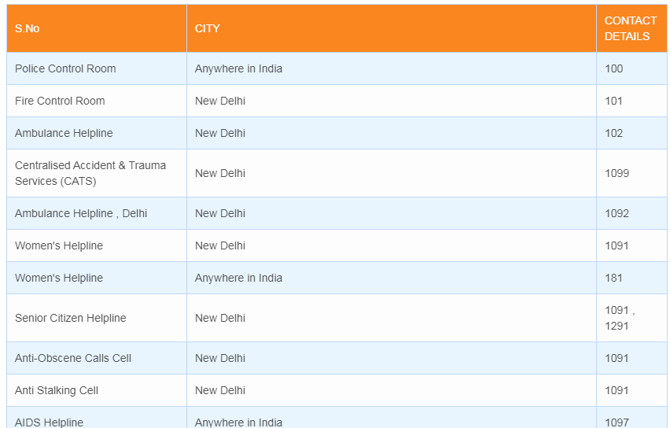

Depending on the hospital management system software features,
it can deal with a lot of tasks. It helps to outline and implement policies, guarantee communication and
coordination between employees, automate routine tasks, design the patient-oriented workflows, advertise services,
manage human and financial resources and provide the uninterrupted supply chain. The components of a hospital
information system can be chosen and combined in the general system that meets the needs and norms of the healthcare
industry as well as quality standards. One of the main requirements of the clinic management system is security.
All medical records have to be protected and only accessible for the allowed users. The convenient and informative
interfaces should correspond to their roles and responsibilities in order to protect the confidential data.
